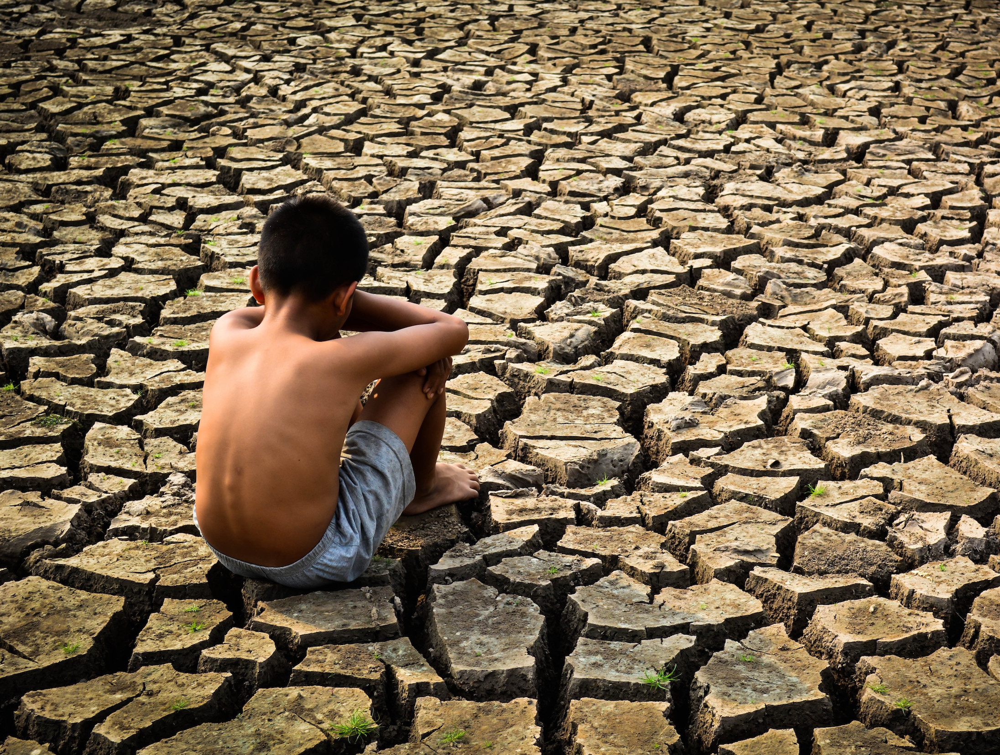

Analysis of Drought Impact:
Drought is one of the most devastating natural calamities that affects agricultural production, economic stability, and water resources. The bar graph above highlights the varying impacts of drought on agricultural yields across several countries. India, being an agrarian economy, experiences significant losses due to drought, with a drastic reduction in crop yield.
The United States, although more industrialized, still faces challenges in agricultural productivity during drought conditions, particularly in states like California. Similarly, countries in Africa, where agriculture is heavily reliant on seasonal rainfall, experience severe setbacks when drought strikes. Australia, another country with recurring droughts, struggles with lower crop yields, while Brazil, despite its vast agricultural land, also faces considerable challenges from prolonged dry spells.
The bar graph shows that India, with its high reliance on monsoons for irrigation, is the most affected by drought conditions, leading to crop failures and a decline in food security. In contrast, the USA and Brazil, with more developed irrigation infrastructure, are better equipped to handle drought but still face significant losses. Africa, however, faces extreme challenges as it lacks the necessary infrastructure to mitigate drought's effects on its agriculture.
In conclusion, droughts are a serious concern for global agriculture, particularly in countries like India, where agricultural productivity is highly dependent on monsoon rainfall. While technological advancements and improved irrigation systems have helped some regions mitigate the effects of drought, a global approach is necessary to address the challenges posed by this recurring natural disaster.